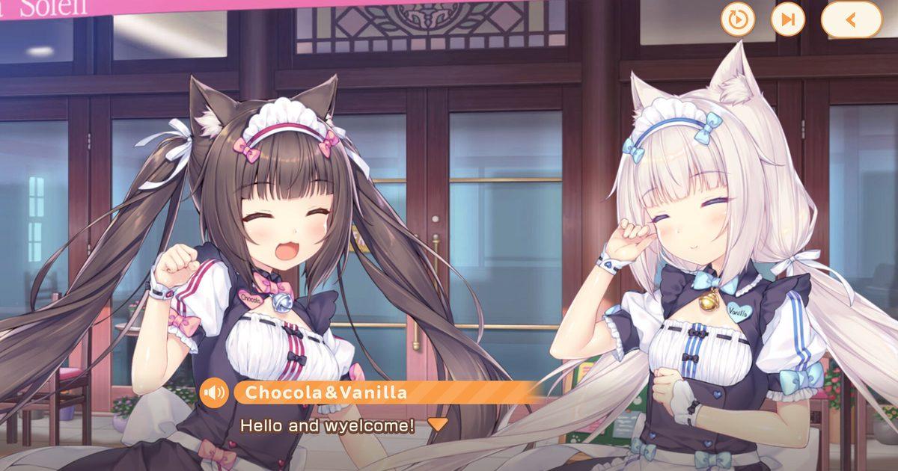

2026-11-17 · 二游深读

11 月 16 日，Good Smile Company 发了一条公告，短得几乎不像新闻： 《猫娘乐园 SEKAI CONNECT》Steam 版 11 月 18 日上线。 如果你只看中文资讯，大概会觉得这是一款「新作要来了」。但把时间轴摊开，事情完全不是这个味道—— 这款游戏的手机版四月十四日就上线了，Steam 版原定九月二十八日， 九月二十五日官方发过一张延期声明，理由是「Steam 审核已超过一个月，完成时间仍不明朗」。 从原定日期到明天，整整五十一天。 对一个靠 Steam 起家的系列来说，延迟不是重点，在自家主场被流程卡住才是。
八月，官方公布 Steam 版发售日：九月二十八日，同时开愿望单，并说明会支持与手机版跨账号绑定。 九月二十五日，延期公告发出——措辞很克制，只说审核期超过一个月、看不到完成时间，承诺审核结束后再公布档期。 十一月十六日，新档期落地：十一月十八日。Steam 商店页上也写了一句： 因延期将补发宝石（Gems）作为致歉，但没说数量，也没说时间。
这里有个容易被忽略的细节：九月二十五日的公告里，官方并没有说「审核未通过」，只说「审核未完成」。 这两件事在发行层面是完全不同的。未通过意味着要改内容、要重新送审、可能永远上不了； 未完成只是排队。但对外部观察者来说，两者的可预期性一样差——你既不知道哪天能上，也不知道会不会上。 一个发售日就这样变成了「待定」，而待定的代价全在发行方这边。
这个系列累计销量超过 700 万份，含 Switch 与 PS4 版，今年正好是十一年。 它的成长路径几乎和 Steam 的视觉小说分区完全重合——早年靠 Steam 的成人内容补丁机制打开海外市场， 靠「买断、一次付费、完整故事」这套老派做法活下来。 换句话说，Steam 不是它的一个渠道，是它的出生地。
所以这次延期真正刺眼的地方不是五十一天，而是它揭示的一件事： 当同一个 IP 从买断制转成服务型（免费下载 + 内购 + 抽卡），它在平台侧的身份也变了。 买断制的视觉小说是一次性商品，审核的是「这一份内容」； 免费制的服务型游戏是一个会持续更新的运营载体，审核的是「这个产品形态」， 包括内购结构、卡池公示、跨平台数据、长期内容政策。后者牵扯的环节多得多， 一次排队卡两个月，在行业里并不罕见，只是很少有人把它写进发售计划里。
更现实的连锁反应在运营侧。手机版四月上线，到十一月已经跑了七个月， 期间的活动、卡池、限定角色全都按手机端节奏在走。 Steam 版晚到七个月，意味着 PC 玩家进场时，面对的是一个已经滚了七期的活动日历—— 他要在一周内补完别人七个月的进度，还要面对「这个池子我错过了」的既成事实。 所有跨平台晚上线的服务型游戏都撞这堵墙，NEKOPARA 只是撞得比较显眼，因为它原本的受众是最不在乎平台的 PC 玩家。
把官方公开的信息按「玩家每天会做什么」重排一遍，这款游戏的结构其实非常工整：
① Live2D 剧情 ADV。三条线：主线（世界各地五所猫学园的猫娘，围绕「猫猫节」人气竞赛）、 猫娘故事（一对一，解锁背景，成为恋人后有专属互动）、活动故事（限时）。 这是留存的地基——剧情是这类 IP 唯一的护城河，也是 Sayori 亲自负责企划、主线、角色设计与插画的原因。
② 餐厅车对战。组队和别的玩家比「上菜效率」，本质是 Diner Dash 那套时间管理玩法， 带半自动托管。这是日常循环的产能出口，也是队伍强度的检验场。
③ 节奏游戏。原创曲 + MV，猫娘跳舞，三档难度。这是「非战斗内容」， 作用是让不玩对战的玩家也有每日打开的理由。
④ 店铺自定义。自己装修蛋糕店。纯装饰，但装饰是这类游戏最稳的付费点之一。
⑤ 服装系统。注意这里的机制设计——服装是装备在「卡」上的， 换装后主界面立绘、SD 小人、专属插画与语音一起变。 把外观绑在卡上而不是角色上，等于说：你抽到的不是角色，是「这个角色的这一张卡」。 这是抽卡游戏的标准做法，也是这套系统里最容易被老玩家骂的地方——买断制时代，你买一次就有全部立绘。
五个钩子里，①②③负责「每天来」，④⑤负责「愿意付」。 抽卡（gacha）横跨全部：卡是战力、是剧情解锁条件、也是换装的载体。 顺带一提，Steam 商店的标签里除了 Visual Novel、Cute、Anime，还出现了 Card Game 和 Deckbuilding—— 这在视觉小说出身的 IP 里是个信号，说明卡牌构筑可能不只是「抽」，还有「搭」。
官方从八月起就强调一件事：Steam 版支持与手机版跨账号绑定。 这句话的价值，比任何一条「PC 版优化」都大。它的实际含义是： 你现在就可以用手机开局，把主线推完、把活动打完、把资源攒着， 等十一月十八日 Steam 版上线，同一个账号登进去，进度还在。
这就把「要不要等 PC 版」这道题解掉了——不用等，也不该等。 服务型游戏最贵的成本是时间，七个月的活动窗口是补不回来的；而跨账号绑定恰好让「先玩手机、后上 PC」没有沉没成本。 反过来说，如果你打算长期在 PC 上玩，那明天要做的第一件事不是抽卡，是先把账号绑好， 再确认一下自己是哪个区的商店、支付方式能不能用——这两件事比开局十连重要得多。
另一个现实指标：截至今天，Steam 商店页的关注人数只有两千五百出头，评价数为零（尚未发售）。 对一款手机端已经运营七个月的作品，这个数字说明PC 版几乎没有做预热。 低预热意味着上线当天的口碑完全由「第一批 PC 玩家的体验」决定， 而第一批玩家的体验里，最刺眼的往往是「为什么这个池子已经关了」。
我们的观察：这次延期最值得记的不是天数，是信息节奏。 九月二十五日说「审核超一个月、看不到头」，然后沉默了五十一天，十一月十六日直接给日期。 中间没有任何进度更新，也没有解释卡在哪一环。 对一个还在运营中的服务型产品，这种沉默比延期本身更伤—— 因为玩家会自行填补空白，而填进去的通常是最坏的解释。
我们的观点：买断制 IP 转服务型，绕不开三个坑，NEKOPARA 至少踩了两个。 坑一，老玩家的账本。他们习惯了「付一次钱，拿全部内容」， 现在要接受「同一张立绘穿不同衣服要再抽一次」；坑二，画师依赖。 Sayori 一个人包了企划、主线、人设、插画，这在买断制时代是品质保证， 在服务型时代是产能瓶颈——卡池是要按周更新的，一个人的手速撑不住一条内容流水线； 坑三，跨平台经济同步。手机端跑了七个月，货币池已经通胀， PC 玩家带着零资源进场，要么被补偿，要么被劝退，官方目前只承诺「补发宝石」，没给数量。 三个坑里，第一个靠叙事能救，第二个靠外包能救，第三个只能靠钱。
我们的案例对比：同样是从「卖拷贝」转「卖服务」，三条路摆在一起看很清楚。 《NIKKE》是原生服务型，从第一天起所有设计都围绕卡池，没有历史包袱； 《碧蓝档案》是买断基因最弱的一类（同人社团起家、一开始就免费），转型成本最低； NEKOPARA 则是买断基因最强的那一类——十一年的「一次付费、完整体验」， 现在要在同一批用户身上改收费逻辑。转型难度和 IP 的历史长度成正比， 这是所有老 IP 做服务型时最容易被低估的一条。
我们的实验：如果明天开号，宝石该怎么花？我的推演是这样： 开服期的限定池通常强度最高但保值性最差，而这款游戏的战力上限被「餐厅车对战」的半自动机制限制住了—— 手操空间有限，数值差距会被机制磨平。所以我倾向于把补偿宝石全部留到第一个「跨学园」主题池， 也就是官方用来拉新一轮活跃的那个池子，同时把主线推到能解锁活动故事为止，先吃满剧情内容。 这套打法的前提是你不追求排行榜；如果你要打榜，那第一池就得抽，因为半自动玩法里数值就是一切。
我们的评分理由：7.3 分评的是「转型的完成度」。加分项：Sayori 全程掌舵、 Live2D ADV 的品质在线、五种玩法覆盖了不同动机的玩家、跨账号绑定让 PC 玩家没有沉没成本、 免费入场对拉新极其友好、四语言同步（含简繁中）。扣分项：Steam 版延期五十一天且信息不透明、 内容比手机端晚七个月造成的进度断层、服装绑卡的付费设计对老玩家不友好、 补偿方案只有一句「会发宝石」。 一句话总结：这不是一款烂游戏，是一款「来晚了但门没关」的游戏—— 对没玩过系列的新人，它是目前最容易进入猫娘乐园的入口； 对十一年老玩家，它更像一次需要重新学习规则的续约。
顺带提一条给收藏党：系列十一周年期间，《猫娘乐园 Love Project》Vol.1–4 在手机商店打七折（各 4.89 美元）。 Steam 版上线后我们会上手实测两点——跨账号绑定的具体流程，以及餐厅车对战在半自动模式下的真实操作量。